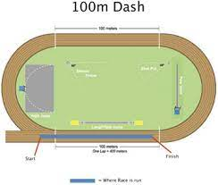
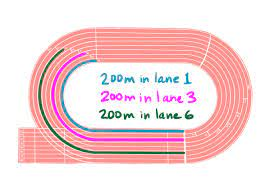
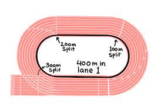

run as fast as you can in a straight line, you don't really get tired running this race and it flies by super fast. Litterally a 11 second race.
run as fast as you can while leaning into the curve and pushing hard once you get out of it. This race will tire out 100m/200m runners which is pretty funny to watch if you're a mid sprint runner. Overall, its a simple race and there isnt much to do except pushing hard. My goal for this race though is to get in to the 20 second flat range which would be amazing and also qualify me for nationals which I need to do because I am that dedidcated.
Stride the first straight away and push on the last, its all speed endurance. Good form is key to not get killed by the lactic acid building up. Swinging arms and staying tall is what you want. This may arguably be one of the hardest races of track from how painful it is. My goal is to break 48 seconds which would also actually qualify me for nationals
